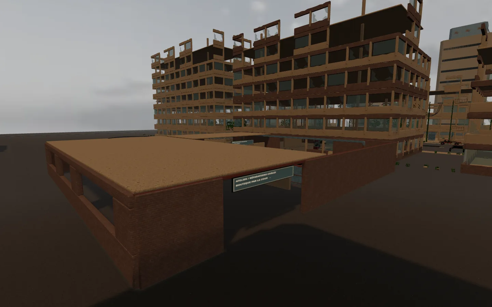
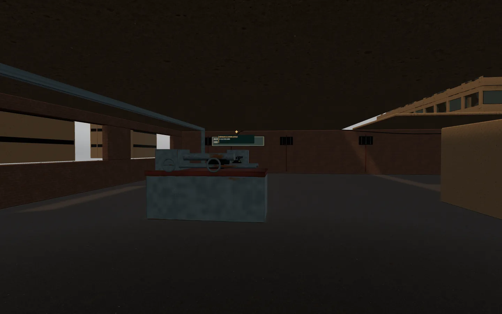
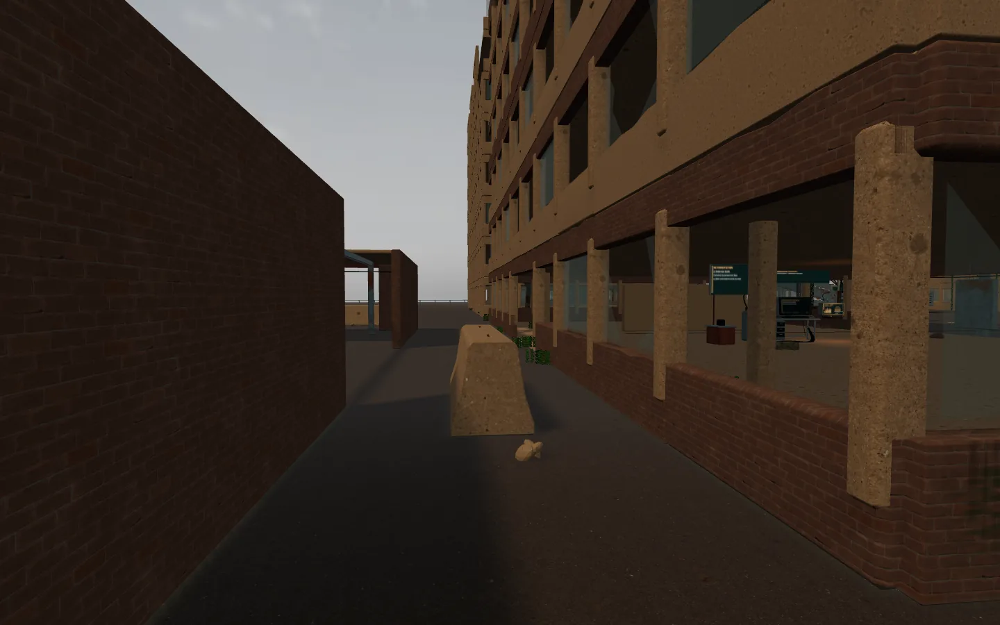
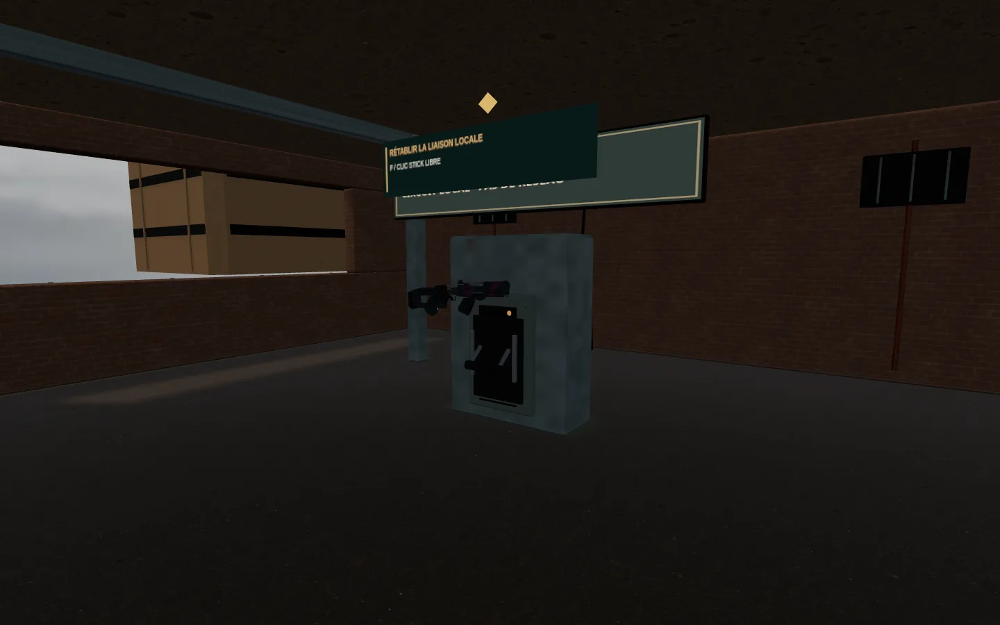

La percée se poursuit à l’ouest.
OPTION A · ATELIER ET BOUTIQUEUn atelier de réparation abandonné, une cour de livraison et un nouvel accès à la boutique. Ces images montrent le décor réellement jouable, capturé sur ordinateur.

Deux approches rejoignent le circuit local. Les ouvertures ouest exposent les fenêtres aux tirs ; les soubassements et cloisons permettent de se protéger.

Machines-outils, équipements usés et réseau électrique isolé racontent la fonction du lieu. Après la remise sous tension, les machines d’ORDRE convergent depuis le secteur ouest.

L’entrée arrière de la boutique est réellement ouverte. Le journal humain conserve la piste du frère ou de la sœur vers les Archives végétales.

Le sectionneur alimente la boutique et attire les renforts. Sa position et son témoin changent après activation.
Prochaines étapes : carrefour et sabotage, puis montée au relais. La mission reste finissable dans ce lot. La cible globale de 20–25 minutes devra être mesurée après ces extensions ; elle n’est pas annoncée comme atteinte ici.